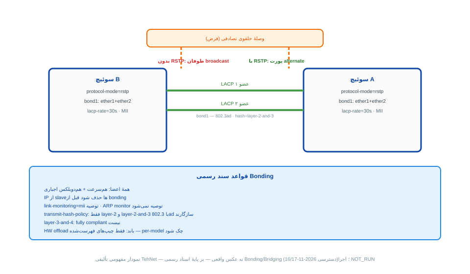

وضعیت درس: DRAFT / NOT_DEPLOYED — در انتظار مرور. (درس مصوب سرفصل S5: loop/RSTP/LACP)
آموزش تصویری از سری switching؛ مخاطب: کارشناس شبکه.
سناریوی کاملاً فرضی و آموزشی با دادهٔ ساختگی؛ هیچ شبکهٔ واقعی دستکاری نشده و هیچ اجرای واقعی NOT_RUN است.
نمودار مفهومی و تألیفی است (نه عکس واقعی).
دو ابزار مکمل: RSTP روی پل جلوی حلقهٔ لایهٔ 2 را میگیرد (پورت زائد را بلوکه میکند) و LACP (bonding mode=802.3ad) دو یا چند کابل را به یک لینک تجمعی مدیریتشده تبدیل میکند که لینک قطعشدهاش را خودش حذف میکند. قواعد سندشدهٔ LACP: همهٔ اعضا همسرعت/همدوبلکس، MII monitoring توصیه میشود (ARP monitor توصیه نمیشود)، `transmit-hash-policy` فقط layer-2 و layer-2-and-3 با 802.3ad سازگارند، و روی سوئیچ، سیمکشی باند باید با پورتهای همان چیپ و پشتیبانی HW سندشده انجام شود.
| بند | مقدار فرضی |
|---|---|
| سوئیچها | دو عدد سوئیچ فرضی RouterOS v7.16+ (سوئیچ A و B) |
| باند LACP | bond1 = ether1+ether2، mode=802.3ad، lacp-rate=30secs، link-monitoring=mii |
| پل | هر دو سوئیچ یک پل با protocol-mode=rstp؛ bond1 عضو پل |
| سناریوی حلقهٔ تصادفی | یک وصلهٔ سوم بین دو پورت آزاد دو سوئیچ (باعث حلقهٔ L2 در نبود RSTP) |
| سقف باند | دو لینک 1G: جمع ظاهری 2Gbps؛ ترافیک تکفلوی TCP حداکثر ~1Gbps (hash per-flow) |
| اجرای واقعی | NOT_RUN — دستورها از سند رسمی Bonding/Bridging نقل شدهاند |
# هر دو سوئیچ A و B — یکسان:
# پیششرط سند رسمی: روی slaveها IP نباشد
/interface bonding
add name=bond1 slaves=ether1,ether2 mode=802.3ad lacp-rate=30secs \
link-monitoring=mii transmit-hash-policy=layer-2-and-3 comment="TN-S5"
/ip address
add address=10.0.0.A/30 interface=bond1 comment="TN-S5"نکات سند رسمی که در این درس رعایت شده:
/interface bridge
add name=bridge1 protocol-mode=rstp vlan-filtering=no comment="TN-S5"
/interface bridge port
add bridge=bridge1 interface=bond1
# بعد از تکمیل VLAN table — فیلترینگ آخر (الگوی M2/S5مکمل)RSTP (protocol-mode=rstp) فریمهای BPDU را بین سوئیچها رد و بدل میکند و پورت زائد مسیر حلقه را بلوکه میکند؛ در سناریوی حلقهٔ تصادفی، پورت مذکور نقش alternate/backup میگیرد و برداشت کابل حلقه فقط از حالت بلوکه خارج میشود — بدون طوفان broadcast.
| حالت | بدون RSTP | با RSTP سندشده |
|---|---|---|
| وصلهٔ حلقه وصل میشود | طوفان broadcast؛ MAC table ناپایدار | پورت زائد در حالت discard/alternate |
| وصله برداشته میشود | بازیابی خودکار طی چند ثانیه (تایمرهای RSTP سند رسمی) | همان |
UNKNOWN: زمان دقیق همگرایی (convergence) به مدل/تعداد پل وابسته است — سند رسمی تایمرها را سند میکند ولی عدد تجربی این ملبا NOT_RUN است.

شرح متنی نمودار (جایگزین تصویر برای دسترسپذیری): سمت چپ دو لینک موازی بین سوئیچ A و B با برچسب «bond1 802.3ad/LACP — lacp-rate=30s، MII»؛ سمت راست یک وصلهٔ حلقوی تصادفی با علامت حلقه؛ روی پل هر دو سوئیچ «protocol-mode=rstp» با پورت بلوکهشده روی مسیر حلقه. جعبههای کناری: «همسرعت/همدوبلکس اجباری»، «layer-3-and-4 غیرسازگار»، «MII بله، ARP خیر»، «حذف IP از slaveها». برچسب «تألیفی/مفهومی».
| نشانه | علت محتمل | بررسی | راهحل |
|---|---|---|---|
| طوفان broadcast پس از وصلهٔ اضافه | RSTP روی پل فعال نیست | `protocol-mode` پل | rstp + بازبینی BPDU روی ترانک |
| bond1 هرگز جمع نمیشود | lacp-mode/passive یا سرعت ناهمسان یا switch side بدون LACP | monitor-slaves | هر دو طرف active؛ همسرعت |
| فقط یک لینک ترافیک میبرد | hash per-flow است — طبیعی LACP | چند فلوی جدا تست کنید | طبیعی؛ جمع فقط روی فلوهای مختلف |
| بعد از bonding، لینک ناپایدار | IP روی slave باقی مانده (نقض پیششرط سند) | `/ip address print` | حذف IP از slaveها |
| HW offload باند فعال نیست | چیپ/device فهرست نشده | سند Bonding | مسیر CPU همچنان کار میکند؛ per-model چک |
| پیوند | مقصد |
|---|---|
| درسهای مرتبط | S5 مکمل: آپلینک/ترانک · M2 · M6 dual-WAN |
| نقشهٔ کامل سری | topic map |
| طراحی تجمیع لینک و مقاومسازی حلقه | خدمات راهاندازی شبکهٔ تهران |
| درس بعدی سری | S6 — ارتقای NAS/سرور 2.5G/10G (تولید در نوبت بعدی؛ فعلاً فقط در topic map) |